Zrzuty — 2026-10-20 15:57 UTC
Edycja gry pl · desktop

Edycja gry en · desktop
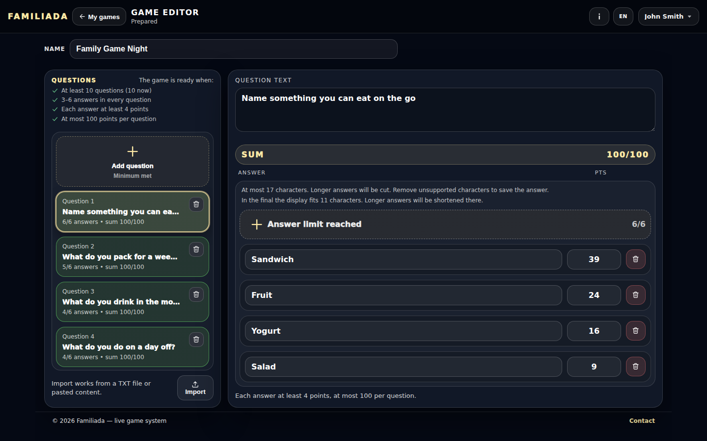
Edycja gry uk · desktop
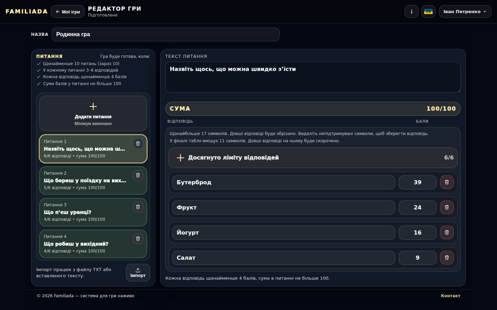
Eksplorator bazy pl · desktop

Eksplorator bazy en · desktop

Eksplorator bazy uk · desktop
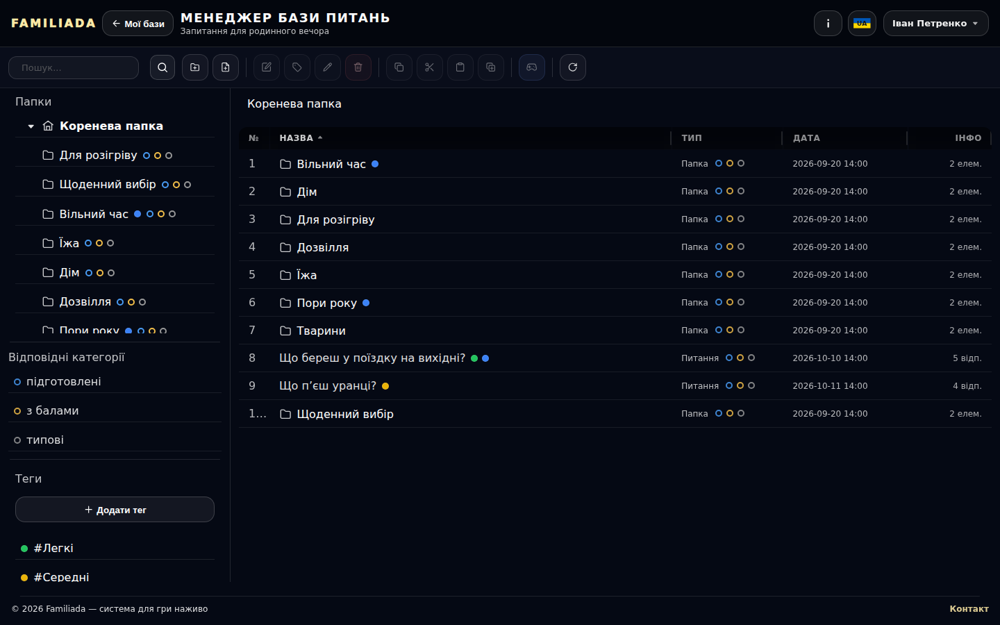
Edycja gry — warunki gotowości, odpowiedź ze znakiem spoza Wyświetlacza i poniżej 4 pkt, podpowiedzi 17/finał 11 pl · desktop

Edycja gry — warunki gotowości, odpowiedź ze znakiem spoza Wyświetlacza i poniżej 4 pkt, podpowiedzi 17/finał 11 pl · phone
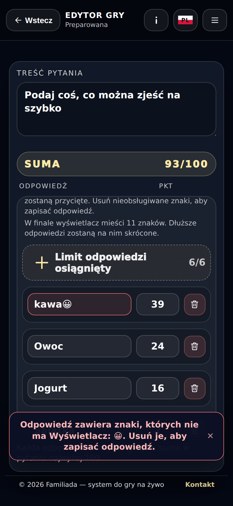
Edycja gry — warunki gotowości, odpowiedź ze znakiem spoza Wyświetlacza i poniżej 4 pkt, podpowiedzi 17/finał 11 en · desktop

Edycja gry — warunki gotowości, odpowiedź ze znakiem spoza Wyświetlacza i poniżej 4 pkt, podpowiedzi 17/finał 11 en · phone
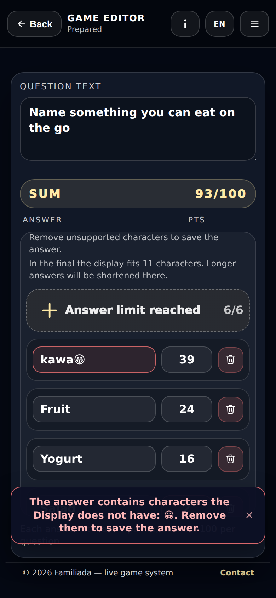
Edycja gry — warunki gotowości, odpowiedź ze znakiem spoza Wyświetlacza i poniżej 4 pkt, podpowiedzi 17/finał 11 uk · desktop
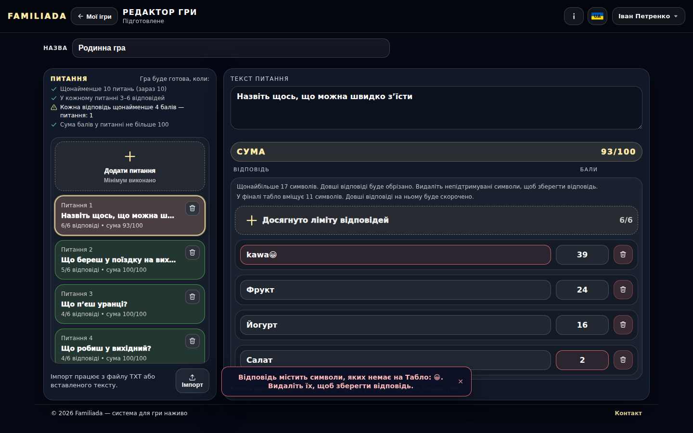
Edycja gry — warunki gotowości, odpowiedź ze znakiem spoza Wyświetlacza i poniżej 4 pkt, podpowiedzi 17/finał 11 uk · phone
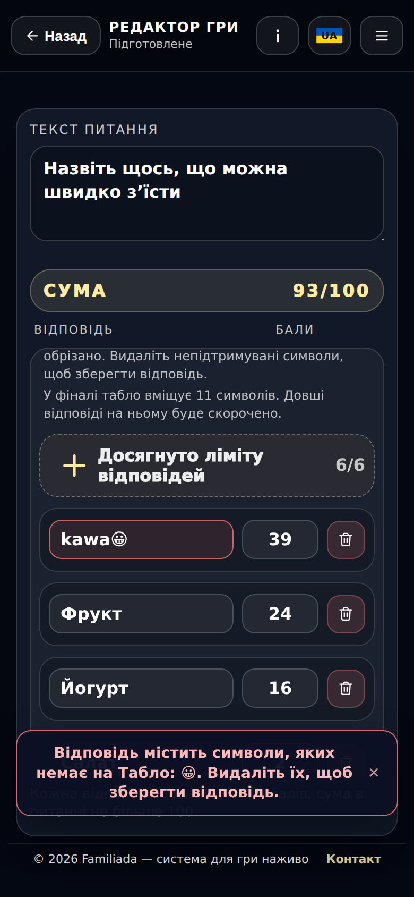
Eksplorator bazy — Utwórz grę (braki informacyjnie) pl · desktop
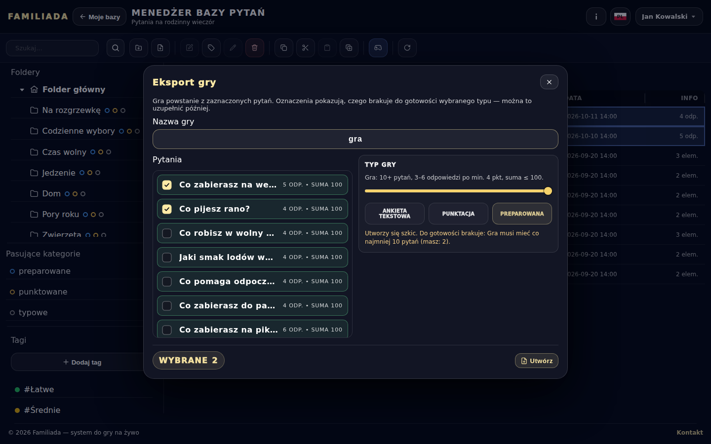
Eksplorator bazy — Utwórz grę (braki informacyjnie) en · desktop
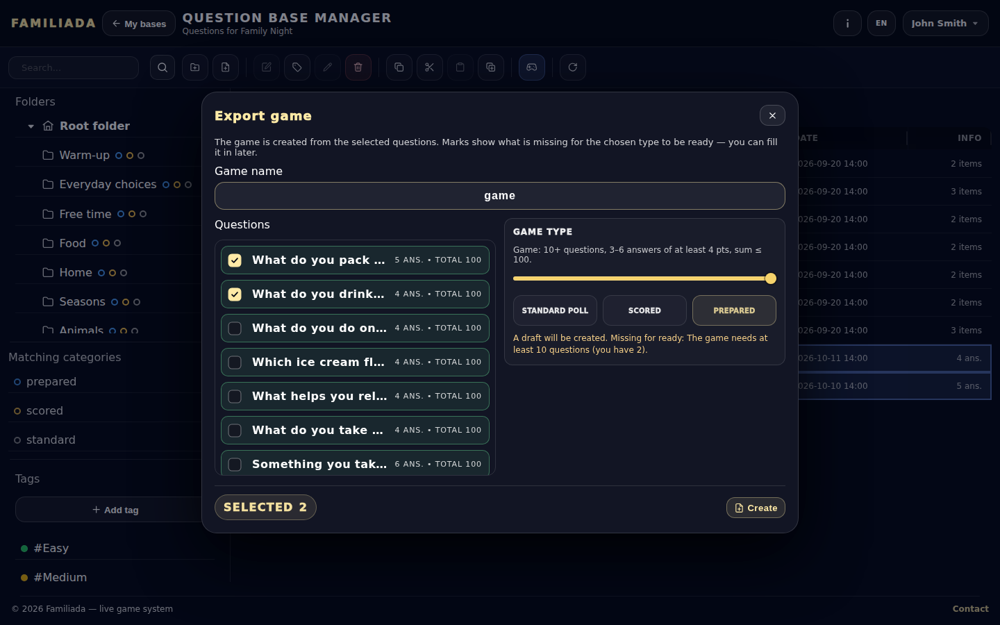
Eksplorator bazy — Utwórz grę (braki informacyjnie) uk · desktop
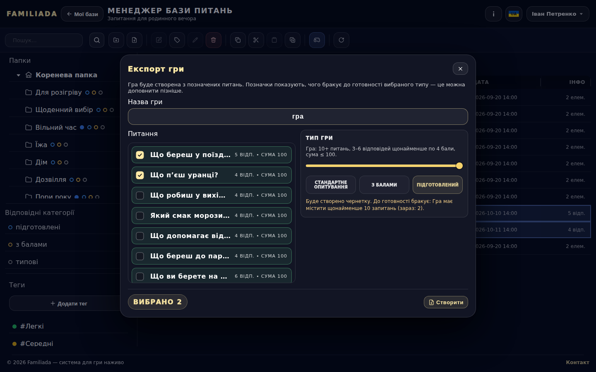
Eksplorator bazy — edycja pytania (podpowiedzi nad kafelkiem dodawania) pl · desktop
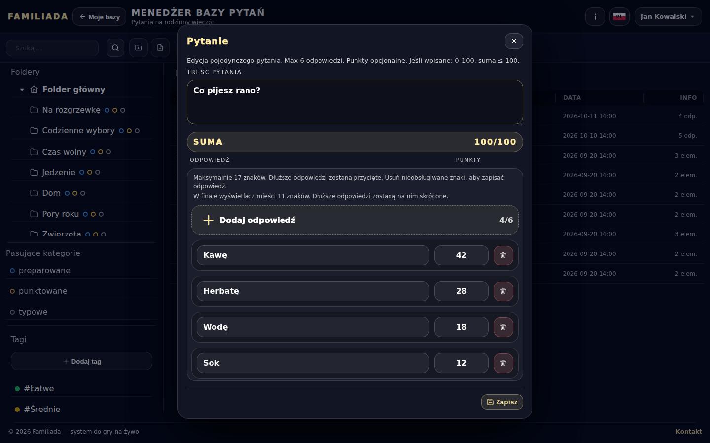
Eksplorator bazy — edycja pytania (podpowiedzi nad kafelkiem dodawania) pl · phone
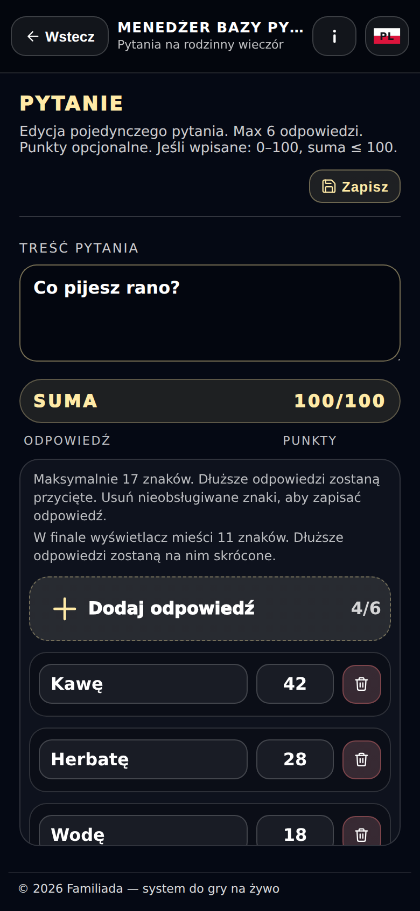
Eksplorator bazy — edycja pytania (podpowiedzi nad kafelkiem dodawania) en · desktop

Eksplorator bazy — edycja pytania (podpowiedzi nad kafelkiem dodawania) en · phone
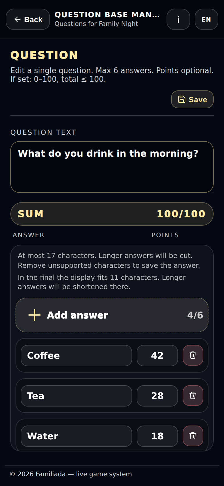
Eksplorator bazy — edycja pytania (podpowiedzi nad kafelkiem dodawania) uk · desktop

Eksplorator bazy — edycja pytania (podpowiedzi nad kafelkiem dodawania) uk · phone
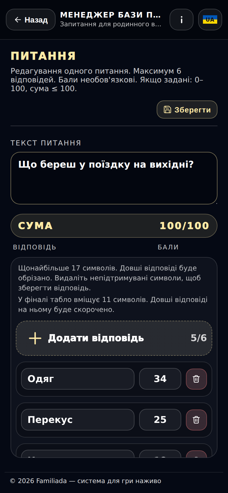